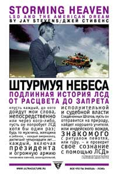

Джей Стивенс • Штурмуя небеса • Перевод: Александр Ведюшкин • non-fiction • 05.01.2004

Диэтиламид лизергиновой кислоты – одно из самых загадочных веществ, с которыми на настоящий момент пришлось столкнуться человечеству. Опасный наркотик или «витамин для души», социальный яд или способ приблизить человеческую душу к божественному, генератор безумия или катализатор прозрения – точный ответ не найден до сих пор, поскольку правом вести научные исследования в этом направлении отныне располагают только секретные лаборатории. В книге Джея Стивенса беспристрастно и подробно рассматривается история ЛСД от его открытия и до того момента, когда загадочное соединение оказалось объявлено вне закона.
Пресса
Петр Резвых. Мечты и глюки. Подлинная история американского нонконформизма
Если на ближайшую пару дней у вас есть рабочие планы, ни в коем случае не открывайте книгу Джея Стивенса. Потому что вам наверняка захочется послать все остальное подальше и глотать страницу за страницей, пока не доберетесь до самого конца. Следуя за стремительными поворотами мастерски выстроенного повествования, не раз вспоминаешь донельзя избитую фразу о том, что реальность, как правило, оказывается причудливее и фантастичнее самого безоглядного вымысла. Столько разнообразных, порой самых экстравагантных и экзотических персонажей, столько необыкновенных происшествий не найдешь ни в одном романе. Солидные кабинетные ученые, университетские профессора и студенты, философы, писатели и поэты, практикующие психотерапевты, бизнесмены, удачливые авантюристы и деятели художественной богемы, сотрудники ЦРУ, самозваные пророки и гуру, активисты леворадикальных движений, государственные чиновники и просто сотни тысяч рядовых американцев оказываются вовлечены в безумный водоворот событий, в центре которого – открытое в 1943 году обычным сотрудником швейцарской фармацевтической фирмы загадочное и притягательное вещество по имени ЛСД, наркотик, превосходивший по силе воздействия все известные прежде.
Джей Стивенс не предлагает никаких оценок, никаких теорий, никакой морали. Просто рассказывает все по порядку. О том, как горстка ученых-психологов решила, что новые препараты станут ключом к тайнам психики, помогут объяснить причины возникновения душевных болезней и произведут переворот в психиатрии. Как философ и писатель Олдос Хаксли, испытав мескалин и ЛСД на себе, вдохновился идеей изменить ход человеческой эволюции и осуществить переустройство общества, просветив с помощью психоделиков интеллектуальную и политическую элиту. Как университетский профессор Тимоти Лири развернул в Гарварде программу изучения измененных состояний сознания и привлек к ней сотни коллег, студентов и аспирантов. Как из гарвардской программы возникло психоделическое движение, отстаивавшее право на эксперименты с собственным сознанием как “пятую гражданскую свободу”. Как лидеры движения покинули университет и как ЛСД благодаря этому перекочевал из научных лабораторий в квазирелигиозные коммуны и на богемные вечеринки. Как поэт-битник Аллен Гинсберг и молодой литератор Кен Кизи превратили психоделики в знамя контркультуры. Как это знамя подхватили хиппи. Как государство развернуло против ЛСД запретительную кампанию. И так далее и так далее – всего не перескажешь. Десятки действующих лиц, сотни эпизодов – все тщательно воссоздано по документам и свидетельствам участников.
История, рассказанная Стивенсом, ставит читателя лицом к лицу с очень серьезными проблемами. Даже если не считать открытие ЛСД главным событием ХХ века, нельзя не признать, что в биографии этого препарата сходятся многие ключевые линии новейшей истории. ЛСД стал пробным камнем практически для всех главных идей, определивших облик современной культуры. Научная революция и новое религиозное сознание, технократический энтузиазм и его критика, поиск инструментов контроля над психикой и способов сопротивления этому контролю, дерзкие проекты создания сверхчеловека и социалистические утопии, тоталитаризм и идеология потребления, политический экстремизм и контркультура – все это так или иначе отразилось в психоделическом зеркале. Здесь есть над чем поразмыслить. Но вот что особенно важно: именно в свете истории ЛСД как нельзя более наглядно явлено неразрешимое противоречие, с которым мы сталкиваемся всякий раз, перешагивая новый рубеж познания. Сам факт существования ЛСД и подобных веществ порождает тысячи вопросов – философских, научных, этических, религиозных, политических, правовых… Но с какой меркой к ним ни подходи, общество при решении любого из них неизбежно окажется перед одной и той же абсурдной дилеммой. Оно обречено выбирать между запретом, который кто-то все равно будет обходить, и разрешением, которым кто-то непременно будет злоупотреблять. Между опасностью монополии и опасностью профанации. Между властью и массой. То есть выбирать всегда приходится из двух зол, причем никогда не известно, которое их них – меньшее.
Николай Савинов. Прими таблетку и будь счастлив?
Давным-давно, а если точнее, то 19 апреля 1943 года в швейцарском городе Базеле молодой химик Альберт Хофманн случайно испытал на себе вещество, споры о свойствах которого не утихают до наших дней. Почти во всех странах мира оно запрещено как опасный наркотик, но, несмотря на это, некоторые ученые продолжают считать его своеобразным лазом в глубины подсознания, способным пролить свет на природу человеческой психики. Речь идет об ЛСД. В своем взгляде на проблему Джей Стивенс весьма далек от позиции, согласно которой ЛСД и другие психоактивные вещества суть не что иное, как эликсиры сатаны. Но «Штурмуя небеса» отнюдь не пропагандистская брошюра, призывающая всех и каждого употреблять психостимуляторы и галлюциногены, это документальное произведение, в котором предпринимается попытка объективно оценить их воздействие на человека. Кроме того, в книге приведена полная история исследований препаратов-психоделиков вплоть до их запрета, а также биографии личностей, в той или иной мере с ними связанных. Уделяя особое внимание таким важным для американской контркультуры фигурам, как радикальный психолог, «ЛСД-гуру» Тимоти Лири и поэт Аллен Гинсберг, Стивенс пишет и об английском писателе Олдосе Хаксли, известном своим интересом к изменяющим сознание веществам, и о Кене Кизи – не только авторе легендарного «Полета над гнездом кукушки», но пропагандисте и идеологе ЛСД. Завершает книгу отчет о ведущихся в наши дни нелегальных исследованиях психостимуляторов.
В отличие от работы Стивенса, рассчитанной в первую очередь на подготовленного читателя, в той или иной степени знакомого с проблемой, роман американского ученого Александра Шульгина «Фенэтиламины, которые я знал и любил» адресован читателю массовому. Шульгин, потомок русских эмигрантов, всю свою жизнь посвятил изучению и разработке психостимуляторов. Например, именно он не только синтезировал, но и испытал на себе всемирно известный препарат «экстази».
Роман Александра Шульгина «Фенэтиламины, которые я знал и любил» – своеобразная автобиография, соединившая историю романтической любви автора с историей его увлечения психоделиками. Действие «Фенэтиламинов» разворачивается в 60-е годы, когда интерес к веществам, изменяющим сознание, принял в Америке массовый характер. Герои романа, молодой ученый Александр Бородин и его жена Элис, оказываются втянуты в этот водоворот. В ткань романа органично вплетены вполне реальные сведения о различных стимуляторах и так называемые трип-репорты, то есть описания психического опыта человека, принявшего тот или иной препарат. Любопытно, что в нашей стране книга вышла со значительными купюрами: цензура не пропустила последнюю часть романа, в которой описаны способы изготовления, применения и дозировки 179 (!) веществ-психоделиков.